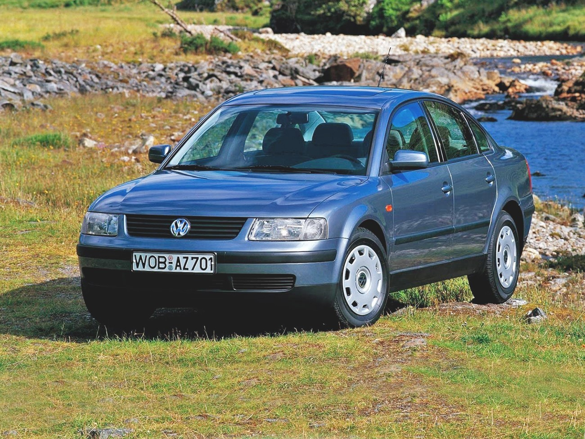

Supercar
German car brand, one of many owned by Volkswagen AG. Under this brand, 6 million 620 thousand cars were sold in 2019
this car is a competitor of Mercedes, BMW, Lamborghini and all sports cars with a maximum acceleration of 450 km/h
Pasat is equipped with gasoline engines with a working volume of 4395 cm3. The power of the BMW M8 engines is from 600 to 625 hp. with., maximum torque - 750 Nm.
